Protect Zur's first attack, then turn each attack into the enchantment the board actually calls for. Equip the pieces you want BEFORE giving him shroud: Zur can attach fetched Auras through shroud, but your Aura spells and equip abilities still target. This is a Bracket 3 Voltron-control list built around combat damage, with Luminarch Ascension as its independent backup.
Get Zur onto the battlefield with protection available
The deck has 34 lands, one additional spell/land card, and ten mana rocks costing one or two. The rocks accelerate Zur and leave mana for interaction and Vanishing on later turns. A turn-two rock can enable turn-three Zur, but an exposed commander into open removal is often worse than waiting a turn.

Arcane Signet
fixes all three commander colors. Sol Ring alone cannot supply Zur's white, blue and black requirements.
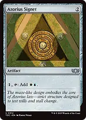
Azorius Signetconverts one mana into white and blue; with a black source and another mana, this gets Zur onto the battlefield. Its activation needs an input mana.
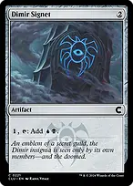
Dimir Signetsupplies blue and black together, complementing the white lands and spells in this list.
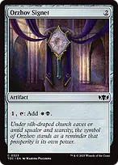
Orzhov Signetsupplies white and black together, leaving blue sources available for interaction when the mana permits.
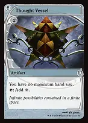
Thought Vesselearly acceleration that later preserves a large Necropotence hand for Empyrial Armor. Its mana is colorless, so still check all three commander colors.

Cavern of Soulschoose Human to cover Zur and the other Humans in this list. Its colored mana is restricted to creatures of that type; it cannot pay for Auras or counters.
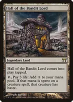
Hall of the Bandit Lordcan give a newly cast Zur haste, but enters tapped and charges three life for its mana. Develop it before the turn you need it.
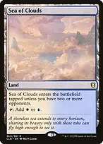
Sea of Cloudsjoins Morphic Pool and Vault of Champions as an untapped dual while you have at least two opponents. They enter tapped once the game becomes heads-up.
Protect the attack and keep the Auras attached

Lightning Greavesimmediate haste and shroud with zero equip cost. Equip Wizard's Staff and any other desired Equipment first; moving Greaves off Zur later needs another legal creature to equip.

Swiftfoot Bootshaste and hexproof while preserving your ability to cast Auras targeting Zur. Unlike shroud, your own spells and abilities can still target him.

Lavaspur Boots
a cheap haste option with a small power boost. Ward one is only a tax, so do not treat it as complete removal protection.
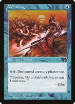
Vanishing
keep two blue mana available to phase Zur and his attached Auras and Equipment out of removal, exile sweepers, or sacrifice effects that would catch him. The ability does not target. Phasing him out during combat preserves the investment but ends his participation in that attack.
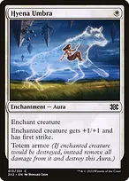
Hyena Umbra
adds first strike and absorbs one destruction event, preserving Zur and his other attachments. Umbra armor does not answer exile, sacrifice, or toughness reduced to zero.
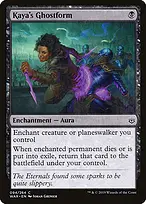
Kaya's Ghostform
recovers Zur after death or exile if you leave him in that zone for the trigger to return him. Moving him to the command zone prevents that recovery. His old Auras still go away, and the returned Zur needs haste or a later turn to attack.
Choose the right attack trigger
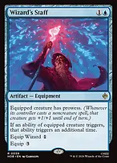
Wizard's Staffcosts two to cast and one to equip to Zur, a Wizard. While attached, it makes his attack ability trigger twice. Resolve those triggers separately: protection first and a draw engine second is a common line. It must already be attached when he attacks, and shroud blocks the equip ability.
Choose protection if removal threatens Zur, a draw engine if your hand is running out, an answer if another player is about to win, and a damage Aura if it creates a useful clock. There is no compulsory first fetch. Moat is mana value four and cannot be found by Zur; Wizard's Staff is an artifact and also cannot be found by him.
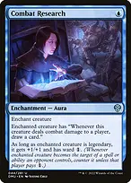
Combat Researchadds power and ward to legendary Zur and draws when he connects. With double strike, it can trigger in each combat-damage step; Wizard's Staff doubles each of these abilities granted to Zur as well.
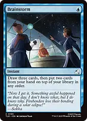
Brainstormputs Auras drawn into your hand back in the library for Zur to fetch. Cast it before the attack trigger resolves and keep Rule of Law's spell limit in mind.
Make combat damage lethal

Ethereal Armorscales with your enchantments and supplies first strike. Recount after every new enchantment, including itself; first strike and double strike do not create a third damage step.
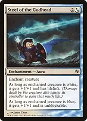
Steel of the Godhead
Zur is both white and blue, so he gets +2/+2, lifelink, and cannot be blocked. This is the main route past flying blockers and the main way to repay life spent on cards.
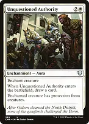
Unquestioned Authorityanother route past creature blockers, with an immediate card from its entry trigger. Protection from creatures does not strip the ordinary enchantment Auras or Equipment in this list.
Track commander damage separately for each opponent. An eliminated player takes their cards out of the game, so reassess blockers, removal and resources before the next attack. Lifelink does not reduce commander damage already marked against someone.
Stay alive while you work through three opponents
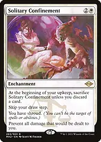
Solitary Confinementprevents damage to you and gives you shroud, but skips your draw step and requires a discard each upkeep. Establish Necropotence or another working engine first. Life loss, life payments and effects that say you lose the game still work. This is a defense you must maintain, not invulnerability.
Answer the problem without disabling your own engine
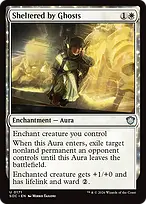
Sheltered by Ghostscombines removal of an opposing nonland permanent with lifelink, a power boost and ward for Zur. The removal trigger targets. If the Aura leaves, including because Zur dies, the exiled permanent returns; phasing is not leaving.

Swords to Plowsharesefficient creature exile when waiting for an attack is unsafe. Solitude supplies another answer that can be cast by pitching a white card when necessary.

An Offer You Can't Refuseprotects a key play or stops a noncreature win attempt for one blue mana. Its two Treasures are real resources for the opponent, so choose the exchange deliberately.
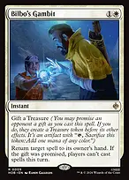
Bilbo's Gambitreturns a spell to its owner's hand, including a spell that cannot be countered. Promising the Treasure also prevents EVERY player, including you, from casting more spells that turn once it resolves. It needs a spell to target and does not remove other spells or abilities already on the stack.

Soul-Guide Lanterninexpensive graveyard interaction that can exile every opponent's graveyard at instant speed once on the battlefield. Its mass-exile mode preserves your own graveyard; drawing a card is a separate sacrifice mode.
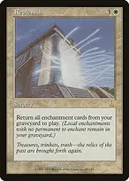
Replenish
rebuilds enchantments lost to destruction or sacrificed, but cannot recover exiled cards. Have a legal creature available for the Auras. Daybreak Coronet cannot use another Aura entering at the same time to satisfy its attachment requirement.
Necropotence exiles discarded cards from your graveyard. While it is on the battlefield, discarding enchantments during cleanup or to Solitary Confinement is not a reliable way to stock Replenish. Use Hall of Heliod's Generosity for enchantments that actually remain in the graveyard.
Opening hands and sequencing
Keep roughly three usable lands, a cheap rock, and interaction, haste, or an early draw engine. Check the actual white, blue and black sources; several utility lands plus a colorless rock can still fail to cast Zur. Two-land hands need a credible draw and mana plan. A hand of damage Auras without development is a mulligan.
Develop mana, then land Zur with protection or haste when possible. Attach Wizard's Staff and other desired Equipment before shroud. On early attacks, stabilize the board and secure cards; then assemble a power Aura, evasion and double strike. Save two blue for Vanishing when a sweeper would otherwise erase several turns of investment.
If Rule of Law is in play, choose your one spell per turn before spending it. Equip, activate Necropotence, create Angels, and fetch with Zur without consuming that spell. Under Solitary Confinement, verify that your next upkeep has a discard and your draw engine will still work.
This list has three Game Changers: Necropotence, Rhystic Study and Cyclonic Rift. It contains no intended infinite combo, mass land denial, extra-turn chain, or paired spell lock. Its Bracket 3 plan is to establish resources and defenses before closing through combat; a strong draw is not a guarantee against three opponents' interaction.